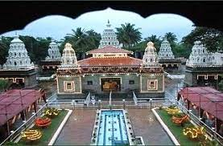
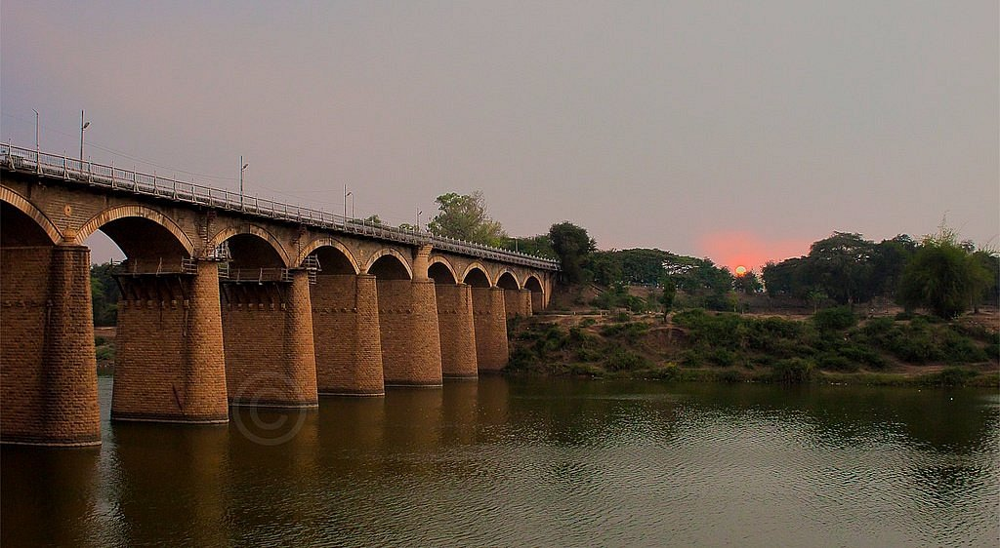
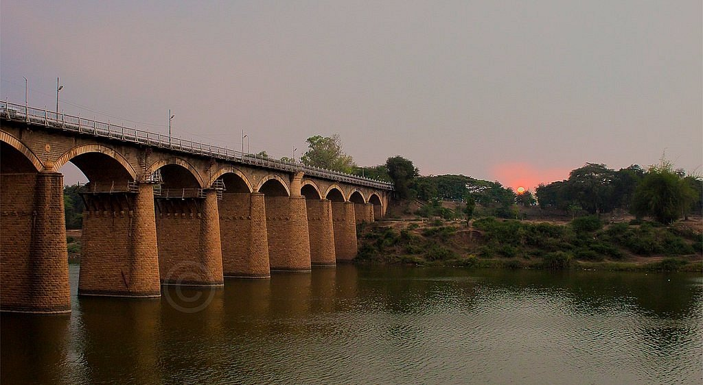

Sangli district is located on the south and southeast of Maharashtra. The district’s area is around 8,572 square feet. That means there are districts of Satara in the north and north east, Solapur in the north and northeast, Bijapur (Karnataka) in the east, Belgaum in the south, Kolhapur in the south, and Ratnagiri in the west. Shirala taluka on the west comes in the main line of Sahyadri. The western part of the district is mountainous. Talukas of Sangli district :- Shirala, Walwa, Tasgaon, Khanapur (Vita), Atpadi, Kavathe Mahankal, Miraj, Palus, Jat and Kadegaon The district has different geographical, economic and social status. Jat, Atpadi, Kavthe Mahankal are the permanent drought-hit talukas. Many villages in Palus, walwa, Miraj talukas are always at risk of flood. Shirala, Khedgaon, Khanapur are hill stations. At one end there is a forest in Shirala taluka. On the other hand, lots of desert land in Jat taluka. Sangli’s half-maternal behavior works in the Kannada language on the Maharashtra-Karnataka border. The east-west length of the district is 205 km and the north-south length is 96 km. Sangli districts major rivers are Krishna, Warna. The length of Krishna river in the district is 105 kms. The temperature of the district is between 14 degree centigrade and maximum of 42 degrees centigrade. The district’s average rainfall is 400-450 mm. The population of the district in 2011 is 28,20,575.
 
